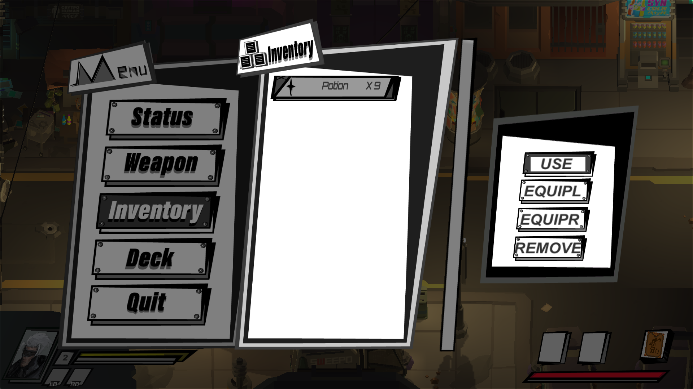

Lontarot
Lontarot is a 2.5D action role-playing game made in Unity.
I did visual effect, inventory system, UI programming and story writing for this game.
-
A particle effect created by me for an ability of the main character.
 -
-
The menu directly inherit from my MenuLayer script.
 Link to my MenuLayer Code Sample
Link to my MenuLayer Code Sample
https://github.com/Lutetium0/LontarotUICodeSample/blob/master/MenuLayer.cs
-
The inventory inherit from my VerticalScrollMenuLayer script.

Link to my VerticalScrollMenuLayer Script Code Sample
https://github.com/Lutetium0/LontarotUICodeSample/blob/master/VerticalScrollMenuLayer.cs
-
The inventory menu is changing its display when players click confirm button.

Link to my Inventory Script Script Code Sample
https://github.com/Lutetium0/LontarotUICodeSample/blob/master/InventoryDisplay.cs
-
Team:
Yunxiao Cai (Inventory System, UI Programming, Visual Effect, Story Writing)
Dong Wang (AI, Player Movement, Game Structure Construction)
Chong Duan (Concept Art, Pixel Art Animation)
Jinrui Hu (UI Design)